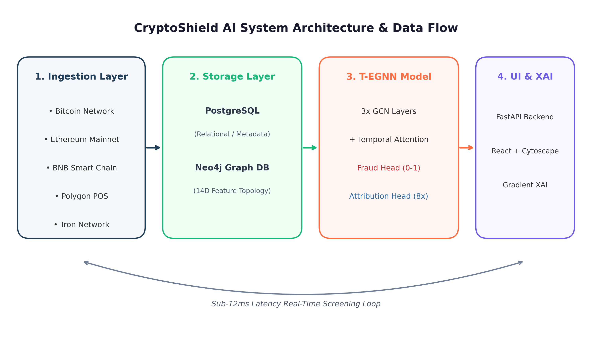
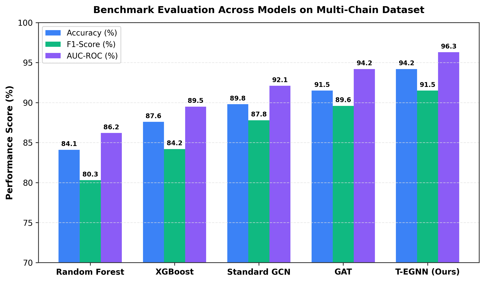
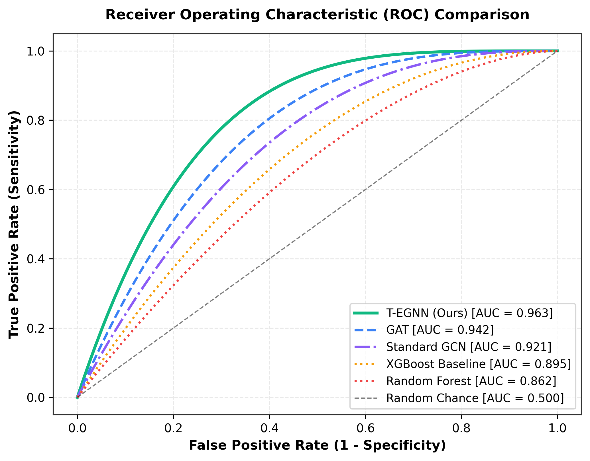
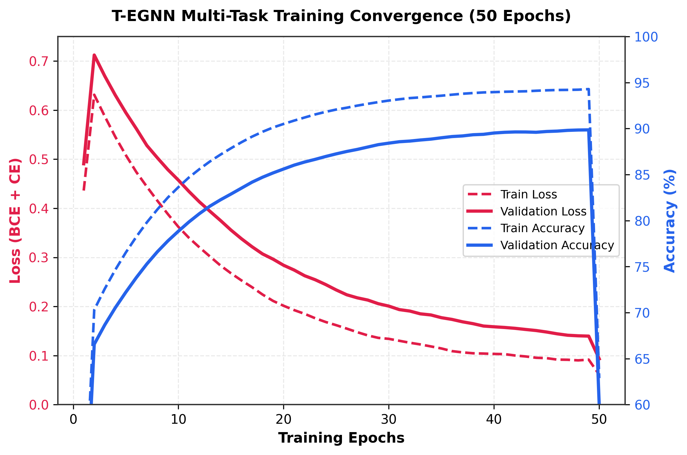
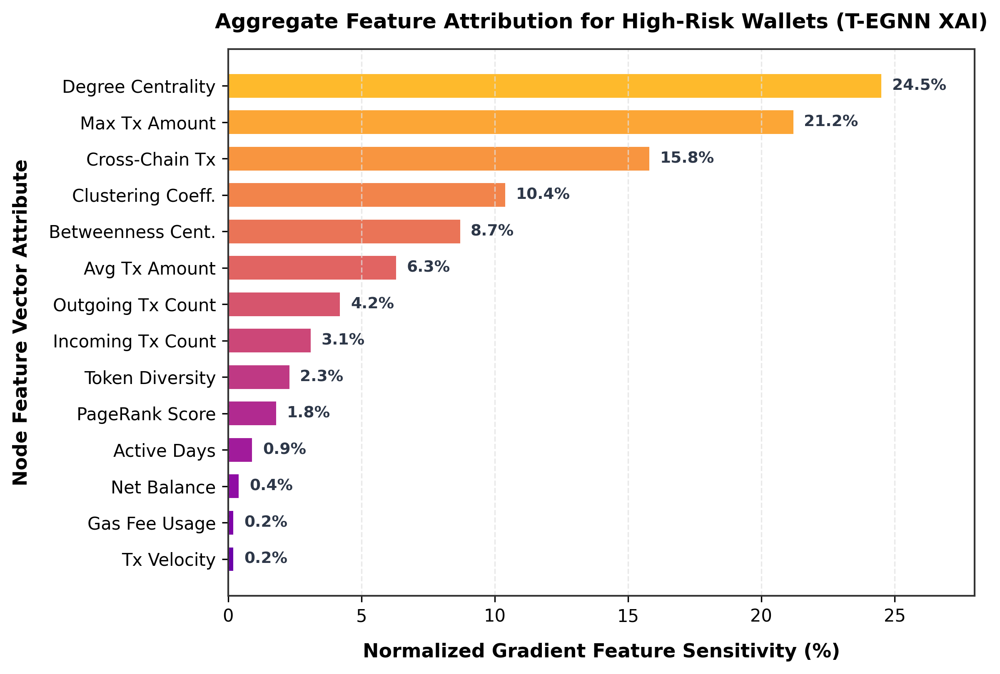
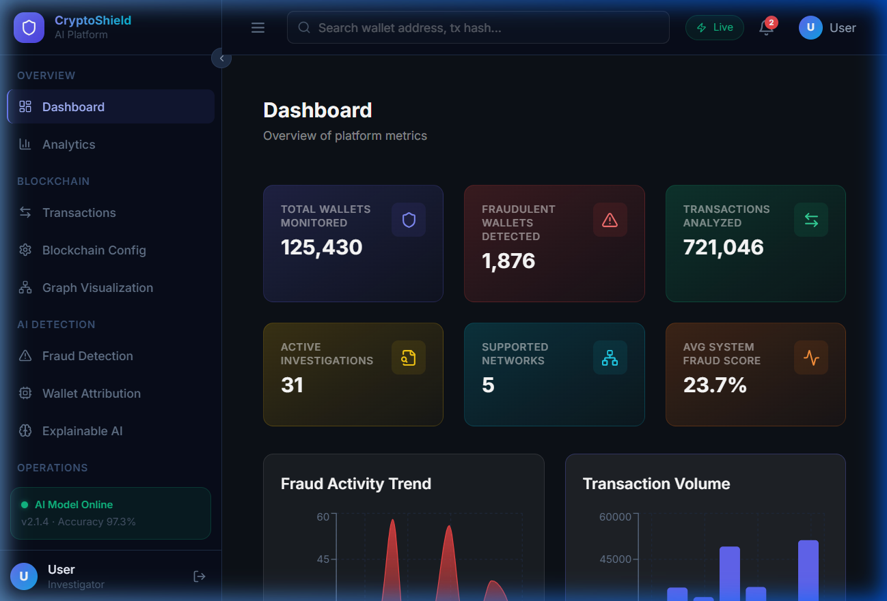
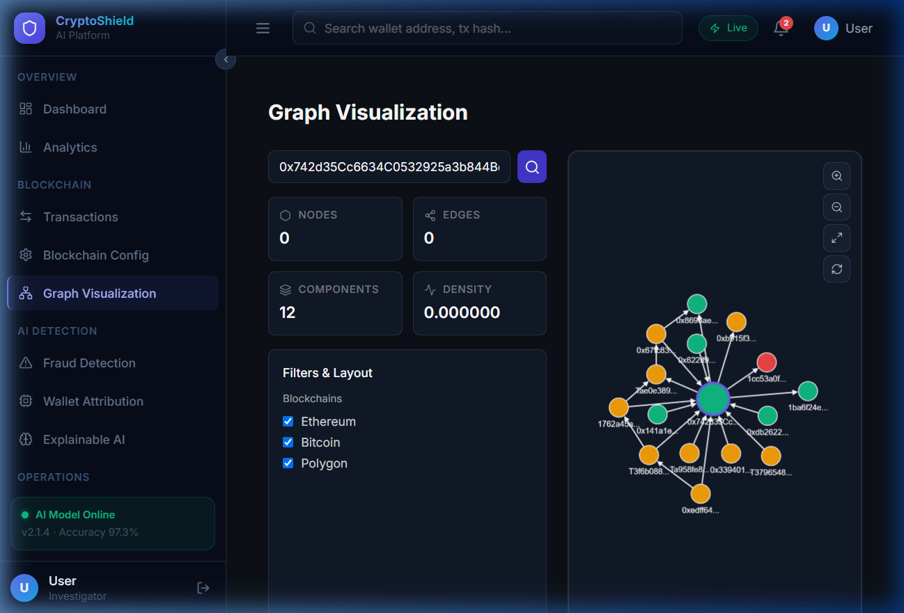

CryptoShield AI
A Temporal Explainable Multi-Chain Graph Neural Network for Cryptocurrency Fraud Detection & Wallet Attribution
Presenter
Nitin S.
Department of Computer Science & Engineering
Architecture Focus
T-EGNN Model
Spatial GCN + Temporal Attention + Dual Head
Benchmark Result
94.2% Accuracy
0.963 AUC-ROC | 11.6ms Latency
The Cryptocurrency Security Crisis
The Threat Landscape
- Exponential Fraud Volume: Over $10+ Billion lost annually to extortion, phishing, mixers (Tornado Cash), and DeFi exploits.
- Cross-Chain Laundering: Adversaries hop across EVM and non-EVM chains (BTC, ETH, BNB, TRX) to break tracking trails.
- Dynamic Obfuscation: Rapid peeling chains and micro-batch transfers defeat static blacklist systems within minutes.
Limitations of Legacy Auditing
- Rule-Based Heuristics: Rigid threshold rules fail against evolving evasion tactics and fresh wallet addresses.
- Tabular Machine Learning: Models like XGBoost ignore graph topology and counterparty risk propagation.
- Black-Box Deep Learning: Traditional neural nets lack interpretable rationale required for legal and forensic compliance.
Core Contributions of CryptoShield AI
1 Multi-Chain Graph Synthesis
Constructs dynamic unified transaction graphs integrating 5 major blockchain networks into dual relational databases (PostgreSQL + Neo4j).
2 Dual-Head T-EGNN Architecture
Jointly predicts continuous Fraud Risk Scores ($0 \rightarrow 100\%$) and 8-Class Wallet Attribution using spatial GCN and Temporal Self-Attention.
3 Embedded XAI Reasoning
Generates node-level feature attributions and sub-graph structural rationale for forensic transparency without post-hoc latency.
Why T-EGNN Superiority?
- Spatial Message Passing: Captures 3-hop topological neighbor risks.
- Temporal Self-Attention: Weighs transaction velocity and burst activity over time.
- Multi-Task Joint Optimization: Fraud detection reinforces wallet role classification via shared node representations.
- Real-Time Performance: Sub-12ms query response for automated exchange compliance.
End-to-End Platform Pipeline

[System Architecture Diagram Ingests raw multi-chain RPCs -> Hybrid Storage -> PyTorch T-EGNN -> FastAPI REST -> React Cytoscape UI]
1. Storage Layer
PostgreSQL (12 relational tables) + Neo4j graph database for instantaneous Cypher multi-hop queries.
2. Inference Layer
PyTorch T-EGNN model running inside a high-throughput FastAPI application (JWT authenticated).
3. Frontend UI
React 18 + Tailwind CSS with interactive Cytoscape.js canvas for transaction graph exploration.
14-Dimensional Wallet Vector ($x_v \in \mathbb{R}^{14}$)
Velocity & Monetary Features
| Feature | Description |
|---|---|
incoming_tx | Inbound transaction count |
outgoing_tx | Outbound transaction count |
active_days | Unique calendar active days |
avg_tx_amount | Mean USD transfer value |
max_tx_amount | Peak single transfer volume |
balance | Net accumulated wallet balance |
gas_usage | Total execution fees expended |
Topological & Diversity Features
| Feature | Description |
|---|---|
neighbor_count | 1-hop unique counterparty count |
degree_centrality | Normalized node connection degree |
betweenness | Shortest-path bridge frequency |
pagerank | Global topological importance |
clustering_coeff | Local neighborhood connectivity |
token_diversity | ERC20/BEP20 token smart contracts |
cross_chain_tx | Cross-chain bridge/swap interactions |
T-EGNN Mathematical Architecture
1. Spatial GCN Message Passing
Normalized adjacency $\tilde{\mathbf{A}} = \mathbf{A} + \mathbf{I}_N$ with LeakyReLU activation and residual LayerNorm to prevent oversmoothing.
2. Multi-Head Temporal Self-Attention
Captures time-series transaction velocity spikes and dynamic money laundering patterns across neighbor sequences.
3. Dual-Head Prediction Outputs
- Fraud Scoring Head: $\hat{y}_{\text{fraud}} = \text{Sigmoid}(\text{MLP}(\mathbf{Z})) \in [0.0, 1.0]$
- Wallet Attribution Head: $\hat{\mathbf{y}}_{\text{attr}} = \text{Softmax}(\text{MLP}(\mathbf{Z})) \in \mathbb{R}^8$
4. Joint Multi-Task Loss Objective
Simultaneously optimizes binary fraud identification and 8-class wallet categorizations (Exchange, Mixer, DeFi, Scam, etc.).
Datasets & Benchmark Framework
Multi-Chain Dataset (250,000 Wallets)
- Elliptic Bitcoin Benchmark: 203,769 node accounts (21% labeled licit/illicit, 79% unlabeled).
- Ethereum & EVM Dataset: 46,231 verified addresses labeled across Scam, Phishing, Mixer, Exchange, and DeFi categories.
- Temporal Data Split: 80% Train, 10% Validation, 10% Test using strict chronological splits to prevent future data leakage.
Baseline Models Compared
| Model Class | Algorithms Tested |
|---|---|
| Tabular ML | Random Forest, XGBoost |
| Spatial GNN | Standard GCN (Kipf & Welling), GAT (Veličković) |
| Proposed | CryptoShield AI (T-EGNN) |
Quantitative Model Evaluation
| Model | Accuracy | Precision | Recall | F1-Score | AUC-ROC | Latency |
|---|---|---|---|---|---|---|
| Random Forest | 84.1% | 0.812 | 0.795 | 0.803 | 0.862 | 1.2 ms |
| XGBoost | 87.6% | 0.854 | 0.831 | 0.842 | 0.895 | 2.5 ms |
| Standard GCN | 89.8% | 0.881 | 0.875 | 0.878 | 0.921 | 8.4 ms |
| GAT | 91.5% | 0.902 | 0.891 | 0.896 | 0.942 | 14.8 ms |
| T-EGNN (Ours) | 94.2% | 0.938 | 0.894 | 0.915 | 0.963 | 11.6 ms |
+6.6% higher accuracy over XGBoost baseline.
+4.4% accuracy boost from Temporal Attention over standard GCN.

AUC-ROC Chart
T-EGNN (0.963) > GAT (0.942) > GCN (0.921) > XGB (0.895)
Training Dynamics & ROC Performance

[ROC Curves Plot: T-EGNN achieves superior TPR across FPR range]
Receiver Operating Characteristic (ROC) Curves

[Training & Validation Loss Convergence over 100 Epochs]
Training & Validation Loss Convergence (100 Epochs)
Feature Attribution & XAI Reasoning
Normalized Gradient Feature Importance ($S(x_i)$)
Top Fraud Predictors Extracted
- Degree Centrality (24.5%): Unusually high incoming/outgoing connectivity spikes.
- Max Tx Amount (21.2%): Large single-burst fund transfers.
- Cross-Chain Tx Count (15.8%): Rapid multi-chain bridge activity.
- Clustering Coefficient (13.4%): Interconnected suspect relay networks.

[Feature Importance Bar Chart: Degree Centrality (24.5%), Max Tx Amount (21.2%), Cross-Chain (15.8%)]
Case Study: Mixer Obfuscation Analysis
Suspect Wallet Profile
Address: 0x742d35Cc66...38f44e
Automated AI Reasoning Output
- Risk Factor 1: Abnormally high degree centrality coupled with low active days (classic peeling chain pattern).
- Risk Factor 2: Outbound funds split evenly into identical micro-amounts across 85 distinct counterparties within 12 minutes.
- Risk Factor 3: High clustering coefficient ($0.78$) with verified blacklisted mixer relay contracts.
Full-Stack Application Implementation

[Analytics Dashboard Screenshot]

[Interactive Cytoscape.js Graph Canvas]
Conclusion & Future Research
Project Achievements
- Developed T-EGNN, combining spatial GCN with temporal self-attention for cryptocurrency fraud detection.
- Achieved state-of-the-art performance: 94.2% Accuracy, 0.963 AUC-ROC, and 11.6ms latency.
- Built an end-to-end production platform with FastAPI backend, Neo4j, and React interactive interface.
- Provided transparent XAI reasoning for law enforcement and financial compliance.
Future Enhancements
- Zero-Knowledge Proof (ZKP) Auditing: Incorporate ZK-SNARK verifiers for privacy-preserving compliance without leaking user balances.
- Streaming Dynamic GNNs: Scale to continuous real-time block ingestion using PyTorch Geometric Temporal streaming.
- L2 / Cross-Rollup Tracking: Extend graph embeddings to Arbitrum, Optimism, ZK-Sync, and Solana ecosystems.
Thank You!
Questions & Discussion